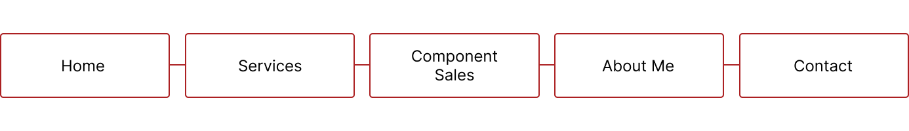

About the project
I volunteered to create a modern, responsive website for Myrsund Mekaniske, a small company needing an online presence to reach customers more effectively. The project involved using HTML, CSS, and JavaScript.
My Role
This was a individual assignment, I acted as the researcher, website developer, UX designer and UI designer.
Timeline
6 months
Tools
Figma, Visual Studio Code
My Design Process
For this project, I took on multiple roles: I conducted research, developed the website, and designed both the user experience (UX) and user interface (UI). I handled all parts of the project to make sure the website was modern, responsive, and met the client's needs.
Insight
Myrsund Mekaniske serves a diverse range of customers, so it was crucial to design a website that appeals to a broad audience. This includes individuals seeking repairs, custom parts, or tailored projects. Therefore, it was important that the website clearly communicates the various services offered by the company. Additionally, facilitating parts sales and showcasing past projects were essential features. An organized and user-friendly contact form was also a priority to ensure visitors can easily get in touch.
Information Architecture
UI Design


The webpage design follows a red, black, and white color scheme to match the logo. The site is clean, minimalist, and fully responsive. Filtering buttons have been added under "Services" and "Parts Sale" to make it easy for customers to browse the categories that interest them most.
Prototype
What have I learned from this project
Working with a client independently and through my own initiative has been an invaluable learning experience. Direct communication with the client has given me a deeper understanding of the entire workflow. Together, we identified the main objectives for the website and went through several iterations, exploring different design options and components to meet the desired outcomes..